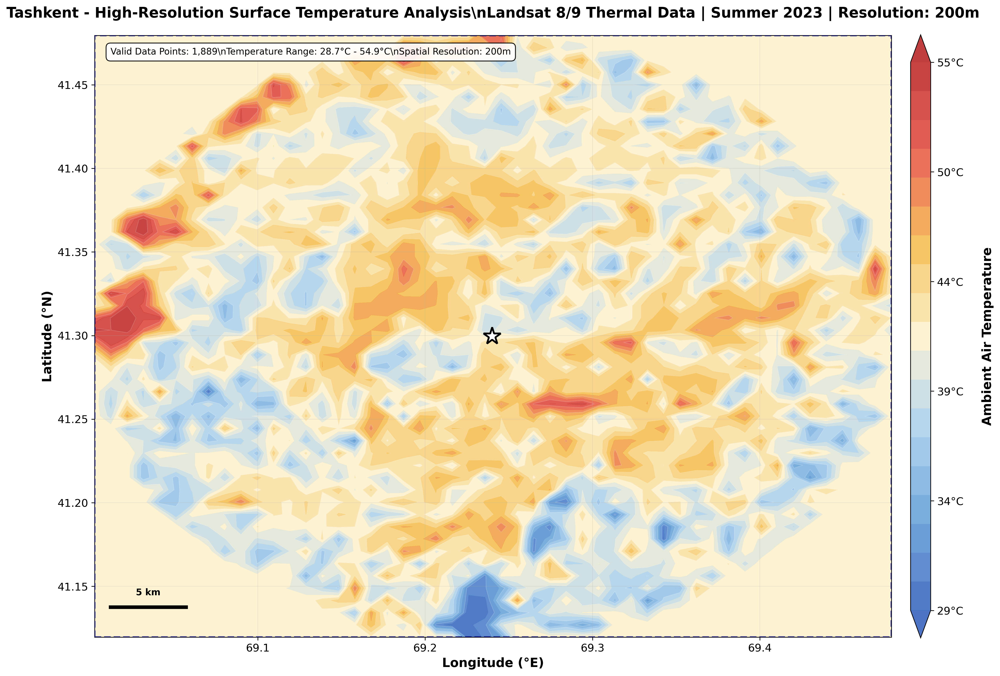
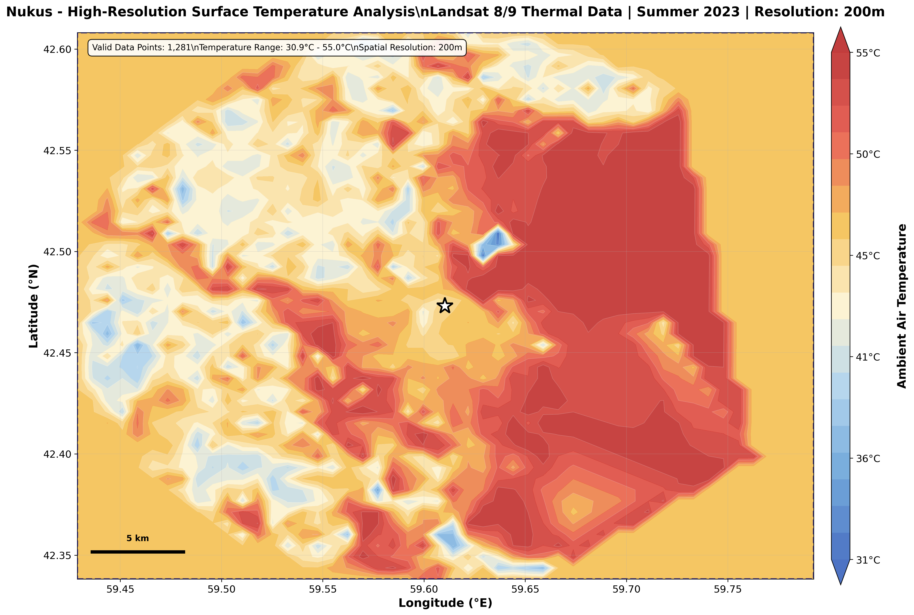

Regional Day SUHI
Regional Night SUHI
Warming Trend
Data Quality
Real SUHI Analysis Dashboard (2015-2024)
Regional SUHI Trends with Statistical Analysis (2015-2024)
City SUHI Rankings
City Comparison Matrix
City Statistics Table
| City | Day SUHI (°C) | Night SUHI (°C) | Trend (°C/year) | Urban Size | Extreme Events |
|---|
Real GIS Maps & Spatial Analysis
City SUHI Maps
Temporal Trends Maps
Enhanced GIS Analysis
High-Resolution Maps
City SUHI Maps - Real Analysis Results
Comprehensive SUHI intensity maps generated from real Google Earth Engine analysis using multi-dataset urban classification and MODIS LST data (2015-2024)

Real SUHI intensity maps for 14 Uzbekistan cities showing spatial patterns of urban heat islands
Yearly SUHI Trends - Temporal Analysis
Multi-year trend analysis showing how SUHI intensities have changed over the 9-year study period (2015-2024)
Temporal trends showing warming and cooling patterns across Uzbekistan cities
Enhanced GIS Context Maps
Comprehensive GIS visualization with administrative boundaries, urban extent, and geographical context

Enhanced GIS maps showing urban boundaries and administrative context for all analyzed cities
High-Resolution Temperature Maps
Detailed temperature analysis for major cities showing fine-scale spatial patterns
Tashkent High-Resolution LST (2023)
High-resolution land surface temperature map for Tashkent
Nukus High-Resolution LST (2023)
High-resolution land surface temperature map for Nukus
GIS Analysis Summary
Spatial Coverage
Complete spatial analysis of 14 major Uzbekistan cities with urban-rural gradient analysis
Map Resolution
200m spatial resolution with high-resolution enhancement for major cities (Tashkent, Nukus)
Temporal Range
9-year time series analysis (2015-2024) showing long-term SUHI evolution patterns
Data Sources
Real satellite data: MODIS LST, Dynamic World, GHSL, ESA WorldCover, MODIS LC, GLAD
Temporal Analysis Dashboard
City-Specific Trend Analysis
Year-over-Year Changes
Variable Correlation Matrix
SUHI vs Urban Characteristics
Urban Size Effect Analysis
Scientific Insights & Methodology
Analysis Methodology
Multi-Dataset Urban Classification
Formula: P(urban) = (DW + GHSL + ESA + MODIS + GLAD) / 5
Combined urban probability using five global datasets for robust classification
- Dynamic World urban classification
- GHSL built-up areas
- ESA WorldCover urban areas
- MODIS land cover urban pixels
- GLAD land cover urban areas
Land Surface Temperature Processing
Formula: LST_Celsius = (MODIS_LST × 0.02) - 273.15
MODIS LST data processing for warm season months
- Monthly median composite (June-August)
- Quality flags and cloud masking applied
- 1km spatial resolution processing
SUHI Intensity Calculation
Day: SUHI_Day = mean(LST_Day_Urban) - mean(LST_Day_Rural)
Night: SUHI_Night = mean(LST_Night_Urban) - mean(LST_Night_Rural)
- Urban zone: P(urban) > 0.15
- Rural zone: P(urban) < 0.2
- 25km ring buffer for rural sampling
Trend Analysis
Formula: β = Σ(xi - x̄)(yi - ȳ) / Σ(xi - x̄)²
Linear regression for detecting warming/cooling trends
- 9-year analysis period (2015-2024)
- Statistical significance testing (α = 0.05)
- Positive trend = warming, negative = cooling
Key Scientific Results
Regional Day SUHI Change
+1.52°CMean daytime warming effect across all cities
Regional Night SUHI Change
-0.44°CMean nighttime cooling effect across all cities
Cities with Valid Data
14/14Complete coverage of analyzed urban areas
Data Quality
93.6%Good quality observations (131/140 total)
Priority Cities
Reason: Extreme SUHI intensities with strong warming trends
Fastest Warming Trends
Impact: Rapid urban heat intensification requiring immediate action
Real Data Quality
Method: Multi-dataset classification with 200m resolution
Temporal Coverage
Season: Warm months (June-August) for peak SUHI detection